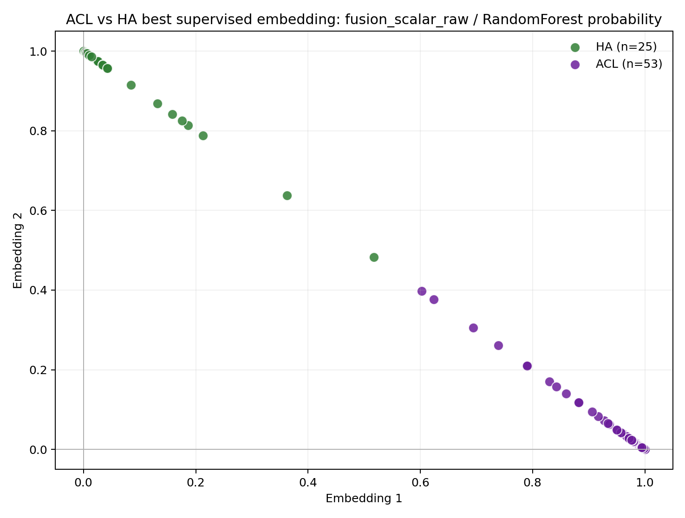
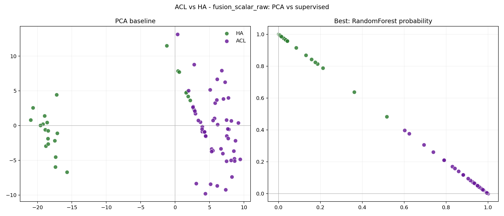
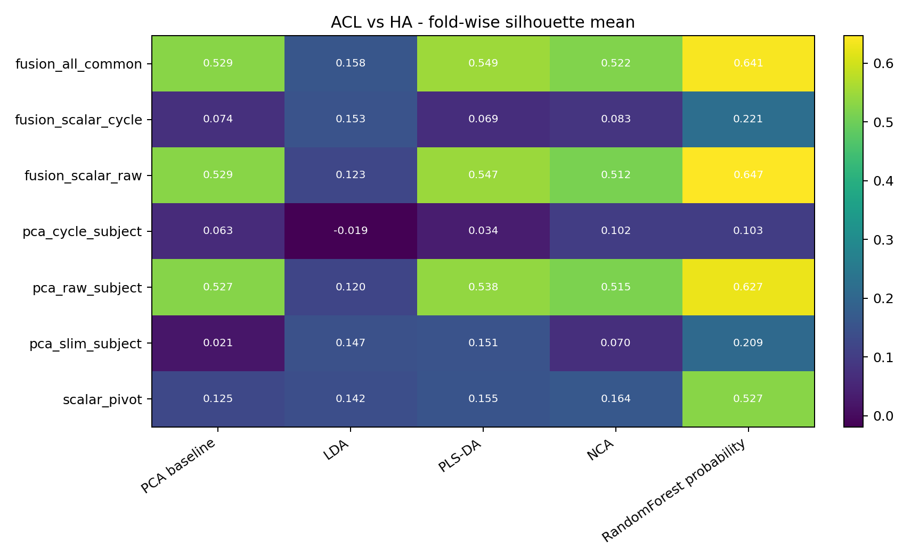
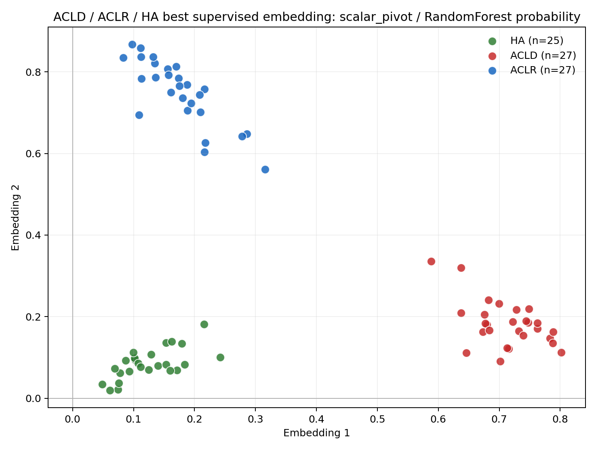
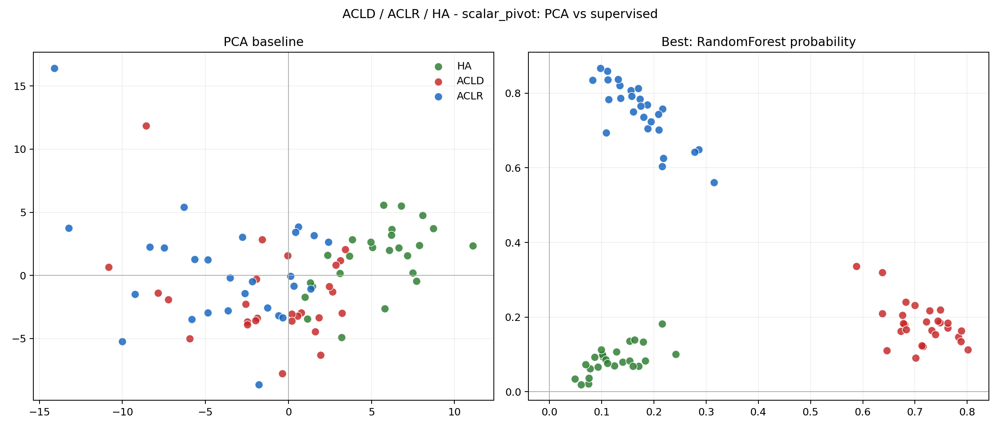
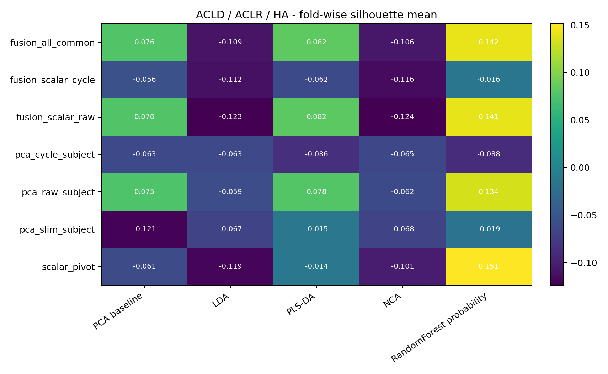
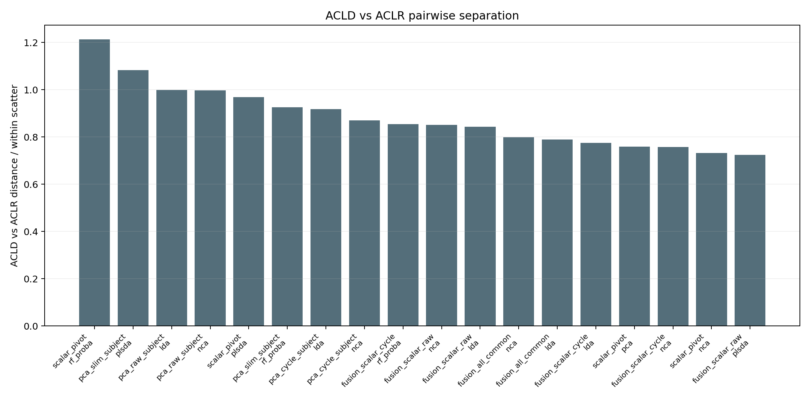

| task | feature_set | method | silhouette_mean | centroid_ratio_mean | davies_bouldin_mean | nearest_centroid_balanced_accuracy_mean | binary_auc_mean | auc_ovr_3class_mean |
|---|---|---|---|---|---|---|---|---|
| binary_acl_vs_ha | fusion_scalar_raw | rf_proba | 0.6466 | 5.1434 | 0.4075 | 0.9550 | 1.0000 | NaN |
| multiclass_3group | scalar_pivot | rf_proba | 0.1511 | 2.4534 | 1.4205 | 0.7222 | NaN | 0.8737 |
| task | feature_set | method | silhouette_mean | centroid_ratio_mean | davies_bouldin_mean | nearest_centroid_balanced_accuracy_mean | binary_auc_mean | auc_ovr_3class_mean |
|---|---|---|---|---|---|---|---|---|
| binary_acl_vs_ha | fusion_scalar_raw | rf_proba | 0.6466 | 5.1434 | 0.4075 | 0.9550 | 1.0000 | NaN |
| binary_acl_vs_ha | fusion_all_common | rf_proba | 0.6410 | 5.1508 | 0.4152 | 0.9550 | 1.0000 | NaN |
| binary_acl_vs_ha | pca_raw_subject | rf_proba | 0.6265 | 4.8240 | 0.4385 | 0.9459 | 0.9964 | NaN |
| binary_acl_vs_ha | fusion_all_common | plsda | 0.5487 | 3.6578 | 0.7246 | 0.8517 | 0.9800 | NaN |
| binary_acl_vs_ha | fusion_scalar_raw | plsda | 0.5473 | 3.6370 | 0.7268 | 0.8517 | 0.9800 | NaN |
| binary_acl_vs_ha | pca_raw_subject | plsda | 0.5381 | 3.5786 | 0.7350 | 0.8517 | 0.9764 | NaN |
| binary_acl_vs_ha | fusion_all_common | pca | 0.5295 | 3.4387 | 0.7657 | 0.8517 | 0.9800 | NaN |
| binary_acl_vs_ha | fusion_scalar_raw | pca | 0.5294 | 3.4418 | 0.7656 | 0.8517 | 0.9800 | NaN |
| binary_acl_vs_ha | scalar_pivot | rf_proba | 0.5273 | 4.1009 | 0.5776 | 0.8833 | 0.9660 | NaN |
| binary_acl_vs_ha | pca_raw_subject | pca | 0.5266 | 3.4332 | 0.7691 | 0.8317 | 0.9764 | NaN |
| binary_acl_vs_ha | fusion_all_common | nca | 0.5216 | 3.3593 | 0.7493 | 0.8317 | 0.9724 | NaN |
| binary_acl_vs_ha | pca_raw_subject | nca | 0.5149 | 3.2219 | 0.7527 | 0.8233 | 0.9884 | NaN |
| binary_acl_vs_ha | fusion_scalar_raw | nca | 0.5115 | 3.2548 | 0.7663 | 0.8433 | 0.9724 | NaN |
| binary_acl_vs_ha | fusion_scalar_cycle | rf_proba | 0.2206 | 1.8705 | 1.4983 | 0.7400 | 0.7473 | NaN |
| binary_acl_vs_ha | pca_slim_subject | rf_proba | 0.2090 | 1.7078 | 1.2463 | 0.6967 | 0.8113 | NaN |
| binary_acl_vs_ha | scalar_pivot | nca | 0.1644 | 1.4203 | 2.6742 | 0.8233 | 0.8980 | NaN |
| binary_acl_vs_ha | fusion_all_common | lda | 0.1583 | 1.5402 | 2.0255 | 0.7052 | 0.8008 | NaN |
| binary_acl_vs_ha | scalar_pivot | plsda | 0.1547 | 1.4383 | 1.5328 | 0.8017 | 0.8420 | NaN |
| binary_acl_vs_ha | fusion_scalar_cycle | lda | 0.1526 | 1.4649 | 4.8943 | 0.6850 | 0.7433 | NaN |
| binary_acl_vs_ha | pca_slim_subject | plsda | 0.1511 | 1.5419 | 1.2770 | 0.7550 | 0.8653 | NaN |
| binary_acl_vs_ha | pca_slim_subject | lda | 0.1468 | 1.7200 | 1.3078 | 0.7417 | 0.8147 | NaN |
| binary_acl_vs_ha | scalar_pivot | lda | 0.1417 | 1.4356 | 1.5872 | 0.7433 | 0.7840 | NaN |
| binary_acl_vs_ha | scalar_pivot | pca | 0.1247 | 1.3946 | 1.5098 | 0.7433 | 0.8640 | NaN |
| binary_acl_vs_ha | fusion_scalar_raw | lda | 0.1226 | 1.4363 | 2.0635 | 0.7085 | 0.7858 | NaN |
| binary_acl_vs_ha | pca_raw_subject | lda | 0.1201 | 1.3089 | 2.8865 | 0.6976 | 0.7257 | NaN |
| binary_acl_vs_ha | pca_cycle_subject | rf_proba | 0.1031 | 1.0697 | 2.3726 | 0.6317 | 0.6413 | NaN |
| binary_acl_vs_ha | pca_cycle_subject | nca | 0.1015 | 0.8067 | 14.2271 | 0.5917 | 0.6087 | NaN |
| binary_acl_vs_ha | fusion_scalar_cycle | nca | 0.0834 | 0.9784 | 2.3587 | 0.6367 | 0.6300 | NaN |
| binary_acl_vs_ha | fusion_scalar_cycle | pca | 0.0744 | 1.0007 | 2.1063 | 0.6650 | 0.6307 | NaN |
| binary_acl_vs_ha | pca_slim_subject | nca | 0.0696 | 1.0483 | 2.3304 | 0.5433 | 0.5547 | NaN |
| binary_acl_vs_ha | fusion_scalar_cycle | plsda | 0.0689 | 1.0737 | 2.0358 | 0.6933 | 0.6653 | NaN |
| binary_acl_vs_ha | pca_cycle_subject | pca | 0.0634 | 0.9279 | 2.2860 | 0.5883 | 0.6053 | NaN |
| binary_acl_vs_ha | pca_cycle_subject | plsda | 0.0339 | 0.9791 | 2.0531 | 0.5967 | 0.6260 | NaN |
| binary_acl_vs_ha | pca_slim_subject | pca | 0.0213 | 0.5680 | 4.2435 | 0.4800 | 0.3967 | NaN |
| binary_acl_vs_ha | pca_cycle_subject | lda | -0.0189 | 0.7262 | 38.2202 | 0.5850 | 0.6210 | NaN |
| multiclass_3group | scalar_pivot | rf_proba | 0.1511 | 2.4534 | 1.4205 | 0.7222 | NaN | 0.8737 |
| multiclass_3group | fusion_all_common | rf_proba | 0.1421 | 2.4771 | 4.6393 | 0.6467 | NaN | 0.8490 |
| multiclass_3group | fusion_scalar_raw | rf_proba | 0.1408 | 2.4643 | 5.5439 | 0.6467 | NaN | 0.8480 |
| multiclass_3group | pca_raw_subject | rf_proba | 0.1336 | 2.4584 | 3.3269 | 0.6489 | NaN | 0.8387 |
| multiclass_3group | fusion_all_common | plsda | 0.0824 | 2.7053 | 2.7318 | 0.6156 | NaN | 0.8052 |
| multiclass_3group | fusion_scalar_raw | plsda | 0.0819 | 2.7054 | 2.7203 | 0.6156 | NaN | 0.8062 |
| multiclass_3group | pca_raw_subject | plsda | 0.0778 | 2.6976 | 2.7863 | 0.6178 | NaN | 0.7965 |
| multiclass_3group | fusion_scalar_raw | pca | 0.0765 | 2.3750 | 4.2995 | 0.5800 | NaN | 0.7831 |
| multiclass_3group | fusion_all_common | pca | 0.0765 | 2.3717 | 4.3518 | 0.5800 | NaN | 0.7831 |
| multiclass_3group | pca_raw_subject | pca | 0.0752 | 2.3909 | 4.2415 | 0.5933 | NaN | 0.7811 |
| multiclass_3group | scalar_pivot | plsda | -0.0138 | 1.3643 | 2.4915 | 0.5844 | NaN | 0.7993 |
| multiclass_3group | pca_slim_subject | plsda | -0.0150 | 1.3488 | 2.0313 | 0.5911 | NaN | 0.7915 |
| multiclass_3group | fusion_scalar_cycle | rf_proba | -0.0160 | 1.3591 | 2.5476 | 0.5756 | NaN | 0.7636 |
| multiclass_3group | pca_slim_subject | rf_proba | -0.0191 | 1.4078 | 2.3513 | 0.6156 | NaN | 0.7868 |
| multiclass_3group | fusion_scalar_cycle | pca | -0.0557 | 0.9461 | 3.1402 | 0.4178 | NaN | 0.6014 |
| task | group_a | group_b | distance_within_ratio |
|---|---|---|---|
| binary_acl_vs_ha | ACL | HA | 7.6515 |
| multiclass_3group | ACLD | HA | 9.4257 |
| multiclass_3group | ACLR | HA | 6.3304 |
| multiclass_3group | ACLD | ACLR | 1.7798 |






